DAY05: Inzecca szurdok, Sampolo tározó, keleti síkság, Solenzara völgye, Bavella-tűk, Zonza
Ez a nap a hegyvidéki szurdokok és tározók világából levisz a keleti part síkjára, majd visszakanyarodik a D268-as úton a legendás Bavella gránitcsúcsaihoz és az Alta Rocca falvaiba.
A mérés automatikusan indul oldalnyitáskor, majd 5 mp múlva frissít.
A távolságok minden célpontnál frissülnek, és az oldal a legvalószínűbb következő pontra ugrik.
A böngésző nem tudott helyet kérni. Ellenőrizd a helymeghatározási engedélyt (Telefon: beállítások → Böngésző → Hely).
1. Défilé de l’Inzecca (Szurdok)
42.0968250849991, 9.305939548145744
mérés: várakozás
távolság: —
Ghisoni után a Fium’Orbu folyó vájta szűk, vadregényes szurdok. Az út közvetlenül a folyó és a sziklafalak között kanyarog, zöldes vizű természetes medencékkel. A Défilé de l’Inzecca szurdokot a Fium’Orbu folyó alakította ki, amely a Monte Renoso masszívumból ered és 45,7 kilométer hosszan folyik a Földközi-tengerig. Ez a szurdok a szomszédos Défilé des Strette mellett mintegy 650 méteres tengerszint feletti magasságban található és körülbelül 4 kilométer hosszúságú. A kanyon szerpentin képződményekbe vájódott, amelyek olívazöld színű, pikkelyes megjelenésű kőzetek. A szerpentin egy metamorf kőzet, amely a Föld köpenyéből származó ultrabázikus kőzet hidratációjából és metamorf átalakulásából keletkezik. A terület Natura 2000 védett övezet, köszönhetően egyedi geológiai és flórabeli jellemzőinek, amelyek Korzikán vagy Franciaországban máshol nem ismétlődnek. A Fium’Orbu folyót kétszer duzzasztották fel öntözés és vízerőmű céljából, a Défilé de l’Inzecca a Sampolo tározó és a Trevadine gát között helyezkedik el. A szurdok meredek esésekkel és szűk átjárókkal rendelkezik, Korzika egyik legimpozánsabb kanyonja, jelentős eróziós mélységekkel. Geológiailag a kristályos Korzika részét képezi, ahol 300 millió évvel ezelőtti variszkuszi orogénia során keletkezett gránit masszívumok dominálnak. A folyó gyors vize évezredek alatt erodálta a szurdokot, zöldes árnyalatú természetes medencéket létrehozva a környező kőzetek ásványi tartalma miatt. A biodiverzitás magában foglalja a szerpentin talajokhoz alkalmazkodott endemikus korzikai flórát, amelyek tápanyagban szegények és magnéziumban gazdagok.
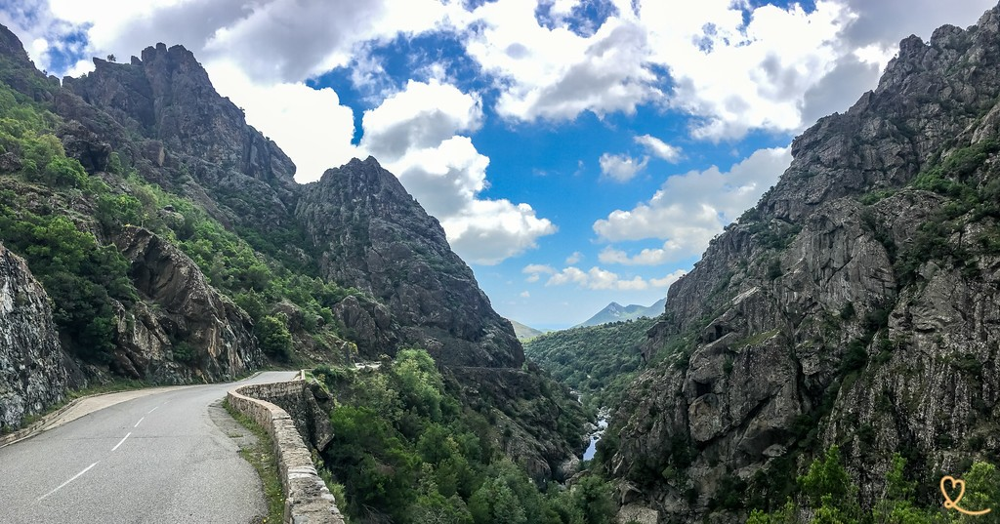
2. Lac de Sampolo (Tó)
42.095575, 9.281474
mérés: várakozás
távolság: —
Egy kisebb mesterséges tó a szurdokrendszer alsó szakaszán (Défilé des Strette). A táj itt is lenyűgöző, az út néhol egészen szűk. A Lac de Sampolo egy mesterséges tározó, amelyet a Fium’Orbu folyón épített Sampolo gát hozott létre, a folyó hossza 45,7 kilométer. A gátat vízerőmű és öntözési célokra építették, vizet duzzasztva a Défilé de l’Inzecca szurdokrendszerben. A tó vízgyűjtője Korzika kristályos geológiai zónájának része, variszkuszi időszakból származó gránit képződményekkel. A korzikai hegyi tavak tanulmányai, beleértve hasonló magaslatiakat, mutatják a hőmérséklet és oxigén profilok mélység szerinti változását, némely tavak 3 méteres mélységet meghaladóan. Korzikán körülbelül 40 hegyi tó található, közülük 15 nagyobb 0,5 hektárnál, főleg 1700 méteres magasság felett. A tározó körül őszi színű juharfák vannak, és visszatartó medenceként szolgál a Fiumorbo régióban. Geológiailag a herciniai alapzatban fekszik, kalc-alkáli granitoidokból állva. A tó létrehozása megváltoztatta a helyi hidrológiát, hozzájárulva a folyó áramlásának szabályozásához. A tó körül a biodiverzitás a Défilé des Strette megőrzött környezetéhez alkalmazkodott fajokat tartalmazza. A területet 1970-ben vizsgálták limnológiai adatok szempontjából, beleértve a topográfiai magasságok árnyékoló hatásait.
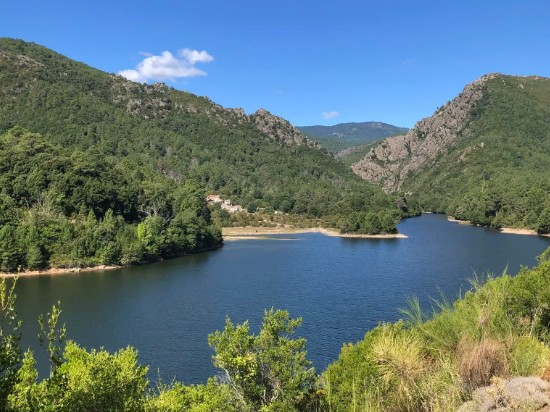
3. Ghisonaccia / T10-es út (Síkvidék)
41.910946, 9.388454
mérés: várakozás
távolság: —
A hegyekből kiérve az útvonal a keleti síkságon, a T10-es főúton halad dél felé. Ez egy gyorsabb, egyenesebb szakasz a tengerpart közelében, pihenőt engedve a sok kanyar után. Ghisonaccia 42° északi szélességen és 9,4° keleti hosszúságon fekszik, 0 méteres tengerszint feletti magassággal. A városnak 3515 lakosa van, és Korzika keleti part menti síkságán helyezkedik el. A T10-es út a kelet-parti sík terepen halad, ellentétben a sziget belső hegyvidékével, ahol a csúcsok meghaladják a 2000 métert. Ez a terület a Costa Serena része, mezőgazdasági földekkel és szőlőültetvényekkel üledékes talajokon. A keleti síkság Bastia-tól Solenzaráig terjed, a palás lánc lábánál elhelyezkedő újabb üledékes kőzetekből állva. Geológiailag az alpesi Korzika része, 60-250 millió évvel ezelőtti ütközésekből származó deformált kőzetekkel. A régió tartalmazza a Pinia erdőt, Korzika legnagyobb tengeri fenyőerdőjét, jelentős hektárokon terülve. Ajaccio-tól 56 kilométerre, Bastia-tól 76 kilométerre fekszik. A sík földrajz lehetővé tette az egyenes utak, mint a T10-es építését, segítve az 1960-as évek mezőgazdasági fejlődését. A biodiverzitás a közeli tavak (stagni) és maquis cserjések fajait tartalmazza.
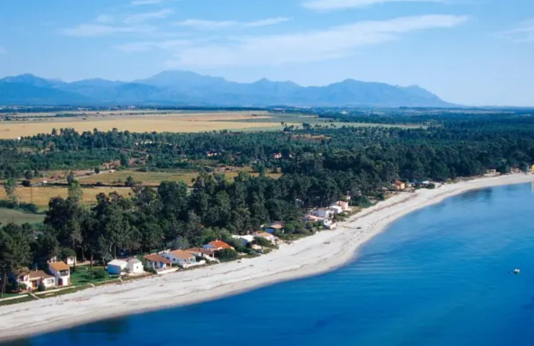
4. Solenzara (Tengerparti város)
41.858166, 9.402219
mérés: várakozás
távolság: —
Kikötőváros, ahol az útvonalunk elhagyja a partot és a D268-as úton ismét a hegyek (Bavella) felé fordul. Ideális hely tankolásra vagy egy kávéra a tengerparton. Solenzara a keleti üledékes síkság déli végén fekszik, Bastia-tól délre nyúlva, újabb üledékes kőzetekkel. A város a palás lánc lábánál helyezkedik el, az alpesi Korzika geológiai egységének része. Történelmileg egy genovai citadellából fejlődött ki, az 1960-as években virágzó mezőgazdasági településsé vált. A terület sík topográfiával rendelkezik, nagy part menti síkságokkal, amelyeket folyók, mint a Solenzara és a Tavignano alakítottak. Tengerszint tanulmányok mutatják a relatív stabilitást a késő neolitikum óta, izosztatikus változásokkal. A Solenzara folyó 22 kilométer hosszú, 1145 méteres magasságból eredve a Tirén-tengerbe ömlik. Geológiailag tartalmazza az eocén flysch-t, egy detritikus üledékes egységet. A Fautea-Solenzara szeparátum dextrális transzpresszív nyírászónákat mutat, amelyek 360 millió évvel ezelőtt aktívak voltak. A biodiverzitás a közeli regionális természeti park fajait tartalmazza. A kikötő támogatja a tengeri tevékenységeket egy 1047 kilométeres partvidékű régióban.
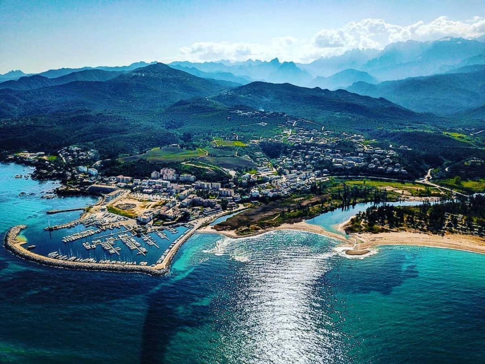
5. Gorges de la Solenzara (Folyóvölgy)
41.833717, 9.313208
mérés: várakozás
távolság: —
A Solenzara folyó völgye híres smaragdzöld vizéről és természetes úszómedencéiről. Az út (D268) hosszan kíséri a folyót, remek fürdőzési lehetőségekkel. A Solenzara folyó 22 kilométer hosszú, 1145 méteres magasságból ered a Bavella-hágó északi részén, és a Tirén-tengerbe ömlik. A szurdokok a keleti üledékes síkságban vannak, a palás lánc lábánál elhelyezkedő újabb üledékes kőzetekkel. A völgy herciniai alapzatot tartalmaz kalc-alkáli granitoidokkal, amelyeket alpesi egységek, mint az eocén flysch fednek. A biodiverzitás endemikus faunát és flórát tartalmaz a Korzika Természeti Regionális Parkjának megőrzött környezetében. A folyó három fő folyó övezetét vezeti le: Solenzara, Tavignanu és Golo. Geológiai komplexitása variszkuszi metamorf kőzeteket és neoproterozoikus doméneket tartalmaz. A szurdokok smaragdzöld vize gránit erózió miatti ásványi szuszpenziókból ered. A terület vízgyűjtője 1500 négyzetkilométeres, hegyvidéki belső területtel és part menti síkságokkal. A közeli termo-minerális források geokémiai sokféleséget mutatnak a multi-kompozit geológiából. A völgy természetes medencéket kínál, amelyeket évezredek eróziós folyamatai alakítottak ki.
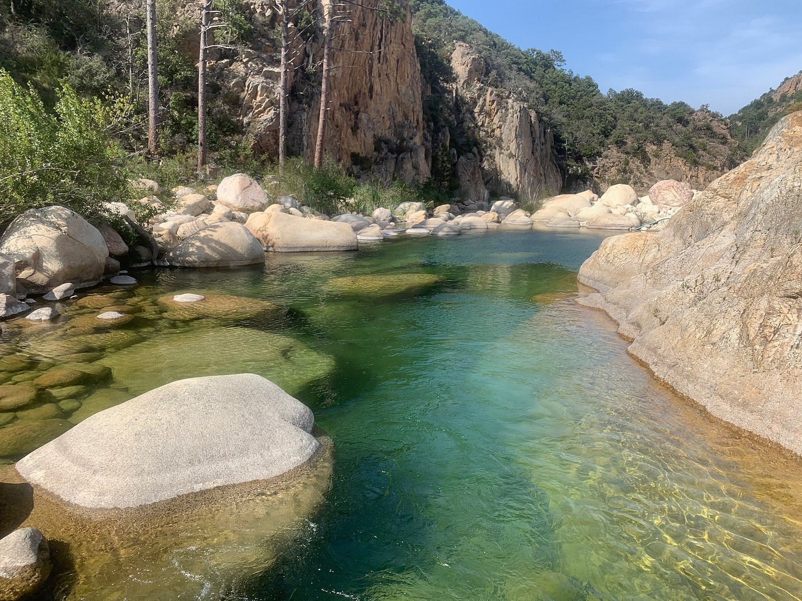
6. Col de Bavella (Hágó és Aiguilles)
41.795841, 9.224671
mérés: várakozás
távolság: —
A "Bavella-tűk" (Aiguilles de Bavella) lábánál fekvő 1218 méteres hágó. Korzika egyik legikonikusabb és legszebb helyszíne, drámai sziklaformációkkal. Itt található a Havas Boldogasszony (Notre-Dame des Neiges) szobra is. A Col de Bavella 1218 méteres magasságban fekszik, összekötve az Alta Rocca-t a keleti parttal. A Bavella-tűk vörös gránit csúcsok, szürke, okker és arany árnyalatokkal. A masszívum hét Asinau tornyot tartalmaz, 1588 métertől (Punta di l’Acellu) 1855 méterig (Punta Alta). A Monte Incudine 2134 méteres magassággal dominál. Geológiailag a variszkuszi orogénia gránitjának eróziójából keletkezett. A terület Laricio fenyőerdőt tartalmaz, az 1960-as évek tűzvészei utáni újraerdősítéssel, beleértve cédrusokat és gesztenyefákat. A hágó a Regionális Természeti Parkban van, 500 méteres magasságkülönbségekkel a túrákon. A Trou de la Bombe természetes eróziós képződmény a gránitban. A biodiverzitás endemikus fajokat tartalmaz a megőrzött magashegyi környezetben. A GR20 ösvény a közelben halad, alpesi variánssal 1662 méteres Bocca di u Pargulu-ig.
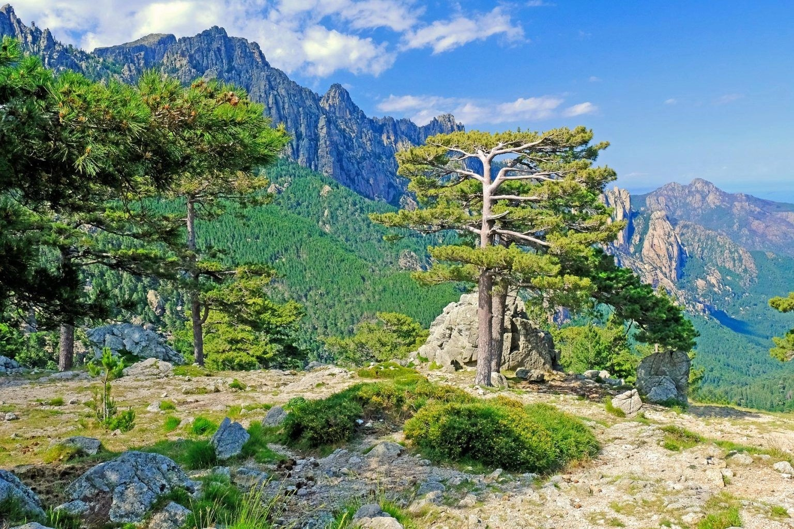
7. Zonza (Érkezés)
41.75096957008441, 9.171739950634105
mérés: várakozás
távolság: —
A Bavella hágóról való leereszkedés után a túra Zonzában, az Alta Rocca régió központi településén ér véget. Hangulatos kőházak és remek kilátás a völgyre. Zonza a Barocagio-Marghese hegyvonulatban fekszik, 20 kilométerre délre az Incudine masszívumtól. A terület variszkuszi Korzika része, herciniai alapzattal és mezozoikus-tercier fedővel. A közeli Zicavo metamorf komplexum orogén-párhuzamos nyírásokat mutat a devon-karbon konvergenciából. A csúcsok meghaladják a 2700 métert, gránit gerinccel. Története genovai hatásokat és mezőgazdasági fejlődést tartalmaz. A község hegyi és part menti részekre oszlik, nincs közvetlen út, 17 kilométeres kitérő szükséges. Geológiailag kristályos granitoidokat és alpesi metamorf egységeket tartalmaz. A biodiverzitás a közeli maquis-ból és erdőkből származik. A régió parafa tölgy erdői 63500 hektárt fednek. A magasság völgyekre nyújt kilátást, amelyeket 25 millió évvel ezelőtti tektonikus rotációk alakítottak.
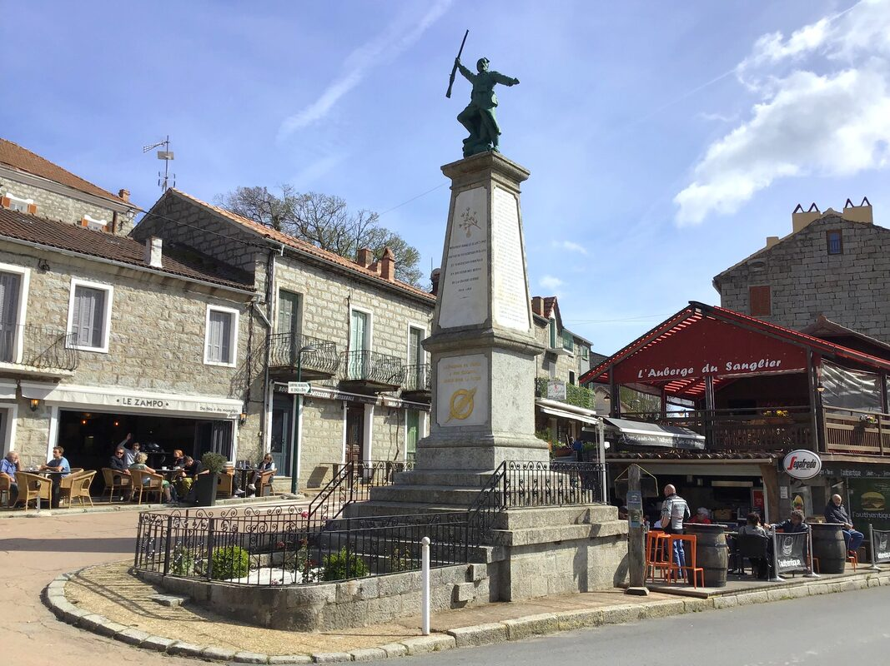
8. Ghisoni (Település)
42.100623, 9.210653
mérés: várakozás
távolság: —
A hágóról leereszkedve érjük el ezt a festői falut, amelyet a Monte Renoso és a Kyrie Eleison hegycsúcsok ölelnek körül. Ghisoni 658 méteres magasságban fekszik egy természetes medencében, körülvéve a 2352 méteres Monte Renoso-val. Lakossága a Haute-Corse megyéhez tartozik. Története tartalmazza a Ghjuvannali testvériséget, disszidens ferenceseket, akiket 1363-1364-ben mészároltak le. A Santa Croce kápolna a 15. századból származik, 1989-ben történelmi műemlékké nyilvánítva. A Neptun-kút 1856-ban készült, Gabriel-Vital Dubray öntötte. Geológiailag a kristályos zónában fekszik gránit masszívumokkal. A közeli Mela híd genovai, 5 kilométerre. A falu a Regionális Természeti Parkban van, Marmanu és Sorba erdőkkel. A biodiverzitás endemikus kétéltűeket tartalmaz, mint a korzikai szalamandra. A terület maquis cserjést tartalmaz levendulával és mirtusszal.
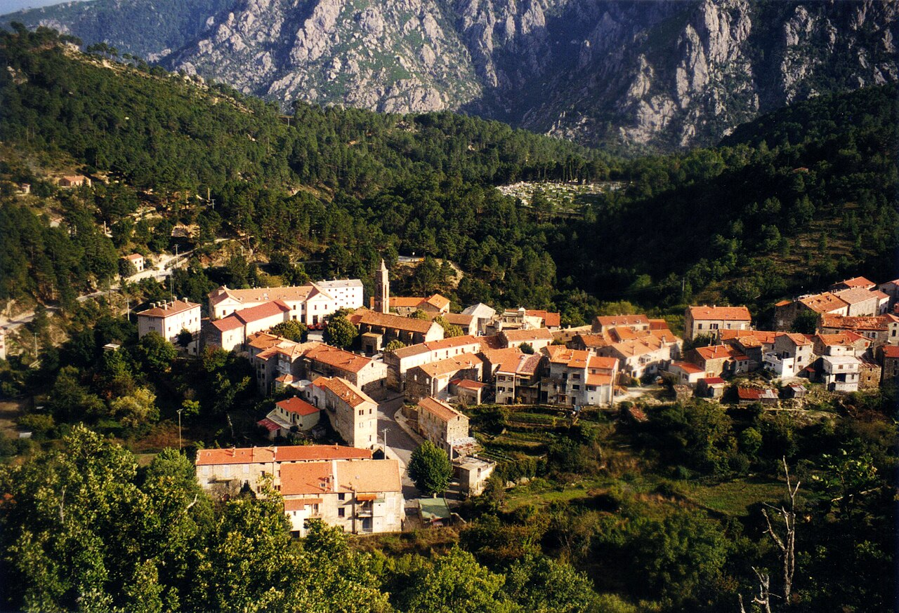
9. Col de Sorba (Hágó)
42.144106995819726, 9.19040572701195
mérés: várakozás
távolság: —
1311 méter magas hágó a D69-es úton. Technikás, hajtűkanyarokkal teli út vezet fel, a tetőről pedig pazar kilátás nyílik a keleti partvidékre és a környező hegyekre. A Col de Sorba 1311 méteres magasságban fekszik a D69-es úton. A herciniai (nyugati) és alpesi (keleti) Korzika találkozásánál van. A terület a Rospa-Sorba területi erdőben fekszik, főleg Pinus nigra laricio-ból állva, gyantás területeket fedve. Egy 2000-es tűzvész 70 hektárt égetett el, beleértve 28 hektár laricio fenyőerdőt. Geológiailag északnyugat-délkeleti irányú töréseket tartalmaz. Natura 2000 terület az EU 92/43/CEE irányelv szerinti fajok számára, beleértve emlősöket és növényeket. A biodiverzitás korzikai csuszkát és endemikus taxonokat tartalmaz. A hágó az első a három közül (Sorba, Verde, Vaccia) Corte-tól Sartène-ig. Környező csúcsok a 1465 méteres Punta Chiova és az 1565 méteres Punta Muro. A terület a Korzika Regionális Természeti Parkban van.
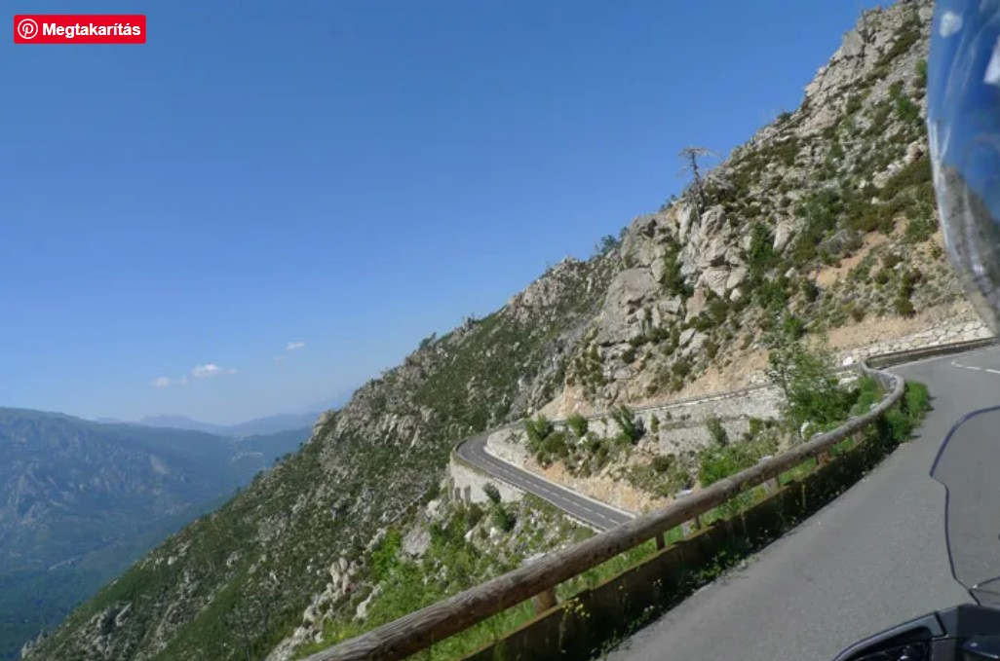
10. Vivario (Település)
42.172115, 9.17106
mérés: várakozás
távolság: —
Hangulatos hegyi település, amely stratégiai pont a hágók előtt. Innen indul a kapaszkodó a Col de Sorba felé, elhagyva a főutat (T20). Vivario a Haute-Corse megyében fekszik, a Col de Vizzavona emelkedő kezdetén. Három vasútállomás szolgálja: Vivario, Tattone, Vizzavona a Corte-Ajaccio vonalon. Földrajzilag hegyvidéki terepen van az ősi kristályos masszívummal. Története korzikai függetlenségi harcokhoz és genovai uralomhoz kötődik. Lakossága Korzika 18 régiójának része, 8681 négyzetkilométeres területtel. A biodiverzitás korzikai csuszkát és kétéltűeket tartalmaz, mint a korzikai szalamandra. A közeli Vecchio folyó áramlásmérései 1960-2021-ig terjednek, 147 négyzetkilométeres vízgyűjtővel. Éves csapadékmennyiség 1061 milliméter. Geológiailag gránitot és metamorf kőzeteket tartalmaz variszkuszi és alpesi orogéniaiból. A terület maquis cserjést tartalmaz aromás növényekkel.
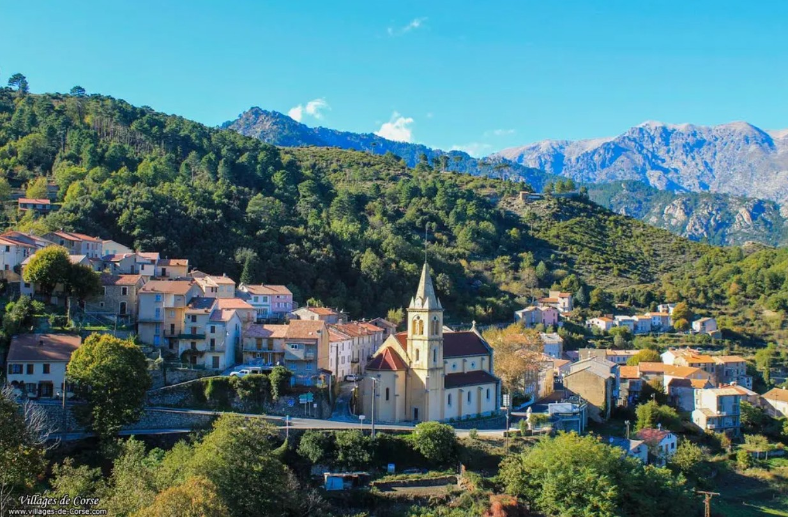
11. Pont du Vecchio (Híd)
42.193181, 9.16763
mérés: várakozás
távolság: —
A Gustave Eiffel által tervezett látványos vasúti viadukt és a mellette lévő közúti híd a Vecchio folyó felett ível át. Érdemes egy pillantást vetni a szerkezetre. A Pont du Vecchio fém vasúti viadukt 1891-1893 között épült Gustave Eiffel tervei alapján. Hossza 170,96 méter, magassága 84 méter, Korzika legnagyobb viaduktja. Három egymástól függő fesztávolságból áll, két pillérrel és kettős ívű támfalakkal. Gyárilag készült acélelemeket a helyszínen szerelték össze a Compagnie des Etablissements Eiffel által. A Vecchio folyót keresztezi Venaco és Vivario között a Bastia-Ajaccio vonalon. Alatta egy 1826-1827-ben épült közúti híd van, ma gyalogosok és kerékpárosok számára. A Vecchio folyó vízgyűjtője 147 négyzetkilométer, éves csapadék 1061 milliméter. Geológiailag a völgy gránit sziklákat és smaragdzöld szurdokokat tartalmaz. A híd tervezése vas rácsot használ szerkezeti integritásért. Több mint 130 éve működik.
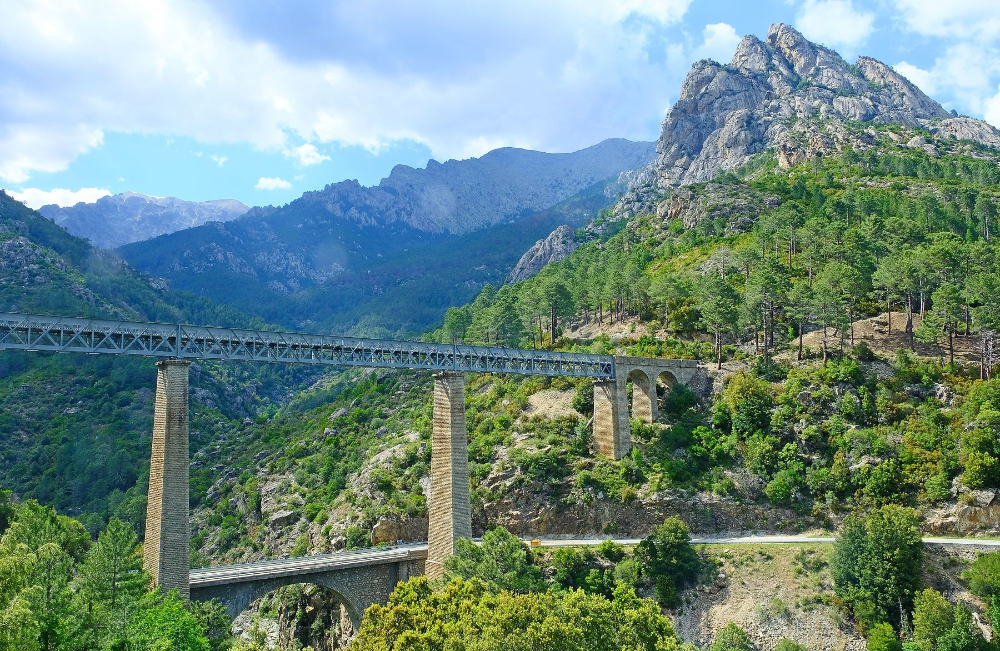